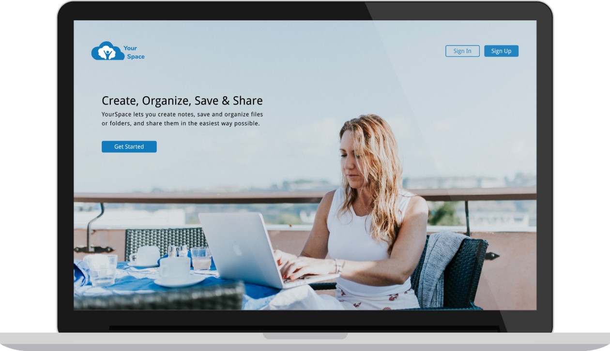
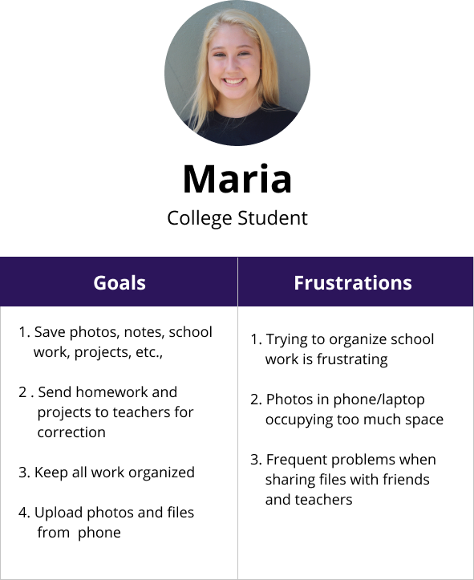
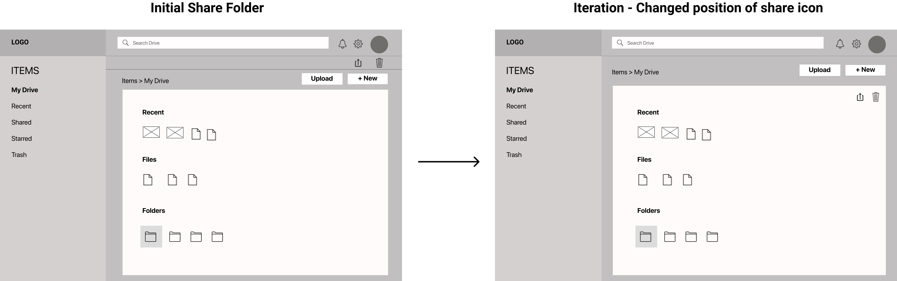
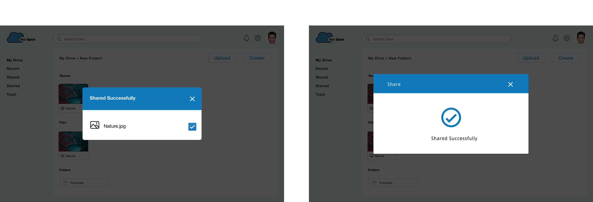

Your Space
Research | Design | Prototype
Your Space is a cloud storage web application that can help users create, upload, organize and store their data, as well as share files with others in a simple and effective way.
VIEW VIDEOProblem
In today’s world cloud service is the best option to store data online. Currently there are multiple cloud storage apps available to users but most of these platforms have confusing task management solutions and cluttered dashboards. They lack simplicity and visibility when users try to create, organize and search for specific stored content.
Solution
Your Space aims to create a simple and intuitive user-friendly experience for users looking to create, upload, organize and share content with others. Users will not only be able to save any kind of content in one place but also create their own content, organize their files and share it with others.
Process
User Survey
I started my research with a survey posted amongst my social media contacts. My objective was to understand users' expectation with respect to cloud file-storage and sharing application. I also wanted to understand the apps they currently use for file storage and their frustrations with these apps.
User Survey Analysis
- 70% users felt that being able to upload content from their device was important to them.
- 65% users felt that being able to create content was important to them.
- 55% users felt that being able to organize the data they saved was very useful.
- 70% users felt that being able to share or collaborate with others was important.
When asked what they disliked the most about the current tools, majority of the survey participants responded that the issue they faced the most was trying to keep all their files organized.
User Personas
I interviewed few survey respondents to get more clarity on their answers, clarify my understanding of the problem and get feedback on my potential solution. These interviews, helped me get a better idea of who my target audiences were. Based on this I created two user personas.
 VIEW PERSONASCompetitive Analysis
Next, I collected and compared data of three of the top cloud file storing and sharing services in the market today such as Dropbox, Google Drive and OneDrive. Studying their strengths and weaknesses helped me realize that all these products have pros and cons. Some of my key takeaways were:
1. Google Drive has a user friendly design but its UI can be improved.
2. One Drive has a user friendly design and easy navigation but has a confusing file sharing process.
3. Dropbox has a very easy onboarding process as well as easy navigation, but it is designed to work with limited folders. It does not work well if you have several folders that have to be synched.
4. Apart from this, I noticed that these three applications use similar icons and use blue as their primary color. Based on this I decided to use a similar visual patterns in my app so my users could easily familiarise with my product.
User Flows
I then converted the users stories into user flows so I could visualize how users can accomplish these tasks with my product. I wanted to ensure my users can accomplish their tasks with minimum views and minimum clicks.
VIEW USER FLOWS
Wireframes And Usability Testing
My next step was to create low fidelity wireframes so I could visualize all the abstract ideas and concepts that were outlined in the user stories and user flows. My sketches underwent several iteration and with each iteration I was able to improve the overall design. Once the sketches were finalized, I converted them to digital wireframes and created a prototype that was used for the first round of usability testing. Below are two examples of changes that were made based on the test results of usability testing.
Test Result and Iterations
1. When users were signing up for an account, they were confused to see a prefilled dashboard. In order to resolve this issue I decided to provide an empty dasboard instead of a prefilled one.

2. Many of the test participants found it difficult to identify the "Share" icon. Based on this I decided to change the position of the share icon to make it more visible.
Brand Story
After updating my design based on the results of the usability testing, I then proceeded to work on my branding. I selected the name “Your Space” for my product because this name immediately conveys the message that this product is "their own space" in cloud.
Once I decided the name of my product, my next step was to find the right logo that defined my brands identity. As part of this, I created several sketches and continued to iterate until I finalized on a logo.
Color
I wanted my brand to have a color that potrayed my product’s purpose and creates the right perception. Since the main purpose of my product is to maintain, manage and backup users' data, my brands color needed to represent the themes associated with these functionality. I chose the color blue because it is associated with trust, dependability and commitment and in turn accurately represents my product.
Typography
Since my product will be used for both personal as well as professional purposes I wanted a typeface that was suitable for such a varied user base. I chose Helvetica and Droid Sans as my typefaces because these fonts are neutral and precice and will potentially have a positive impact on all users.
Hi-Fi Mockups And Preference Testing
With a better understanding of the design, I took to Figma to create high fidelity mockups to solidify the look and feel of the platform. I then conducted a preference test to validate specific features of my product.
Preference Test Results
For the signup screen, 85% participants chose Option B
For the confirmation message, 95% of my participants chose Option B
Usability Testing and Visual Design
Based on the results of the preference test, I created a prototype using Figma. I then conducted the second round of usability testing and also had the design reviewed by my peers in the Thinkful community which comprised of designers and developers.
Feedback on Logo
One very important feedback I received from senior designers was regarding my logo design. They felt that my logo would look much better without its black outline. So I decided to modify my logo by removing the black outline as well improving the shape and design of the logo. I changed the font of the logo text from Helvetica to Nunito so its rounded edges would match the curves of the cloud. Other feebacks which I received from my usability test paticipants as well as senior designers and peers varied from things such as adjusting the size and shapes of buttons, improving the clarity of icons, as well as tweaking my design to give it a more trendy look.
Final Design
After spending several hours and days iterating the design, the final feedback was extremely positve. During the final round of usability testing, users noted the clean design and moved quickly through each task without pause. This helped me validate my design. I understand the importance of constantly having another set of eyes review my work and receiving critique and feedback to produce the best results.
Takeaways
With Your Space, I wanted to create a simple tool that users could easily navigate and use to save all files in one place. The lesson I learned during the project was the importance of a solid foundation. By putting time and effort to build well defined wireframes and mockups, it is much easier to work on more details in a prototype. Also I learned the importance of in-person usability testing, to be able to obtain feedback on issues critical to a product's viability and feasibility while still leaving enough room for exploratory tangents and unexpected insights.